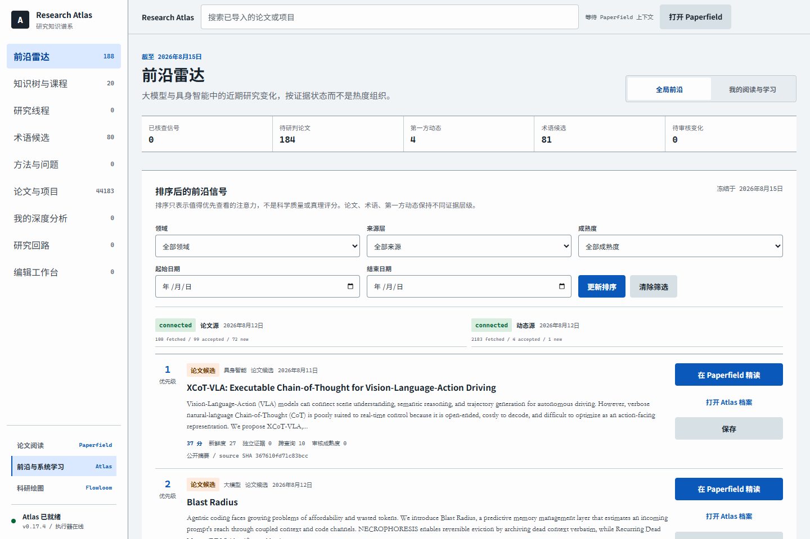
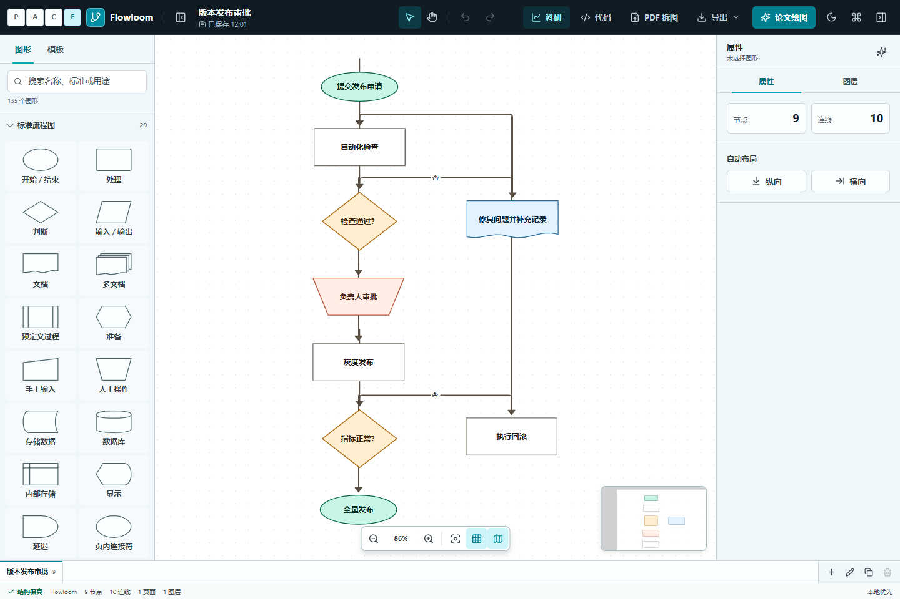

01 / DISCOVER & READ
每周发现，直接进入同篇论文精读。
候选论文、合法公开 PDF、项目源码、阅读历史和基于原文的讲解在同一个阅读线程中持续积累。
- 统一论文更新线程
- PDF、公式与证据问答
- 论文与项目双向上下文
/ 论文发现与精读/论文发现与精读Paperfield
/atlas/前沿与系统学习Atlas
/flowloom/科研绘图Flowloom
从候选论文到研究产物
统一的论文、项目、章节、图与来源定位协议保留上下文。你可以从前沿信号进入深度档案，回到同篇 PDF 精读，再把论文图送进可编辑画布。
三个工作区
01 / DISCOVER & READ
候选论文、合法公开 PDF、项目源码、阅读历史和基于原文的讲解在同一个阅读线程中持续积累。
/ 论文发现与精读02 / UNDERSTAND & LEARN
Atlas 把新术语、方法、证据、研究问题和主要论文连成可追踪档案；课程章节直接挂在知识树上，不再维护独立课程网页。

/atlas/ 前沿洞察与系统学习03 / EXTRACT & DRAW
Flowloom 接收论文、页码与图像来源上下文，将 PDF 中的流程图提取到可编辑 SVG 画布，并为按论文语义生成科研图保留统一元素协议。

/flowloom/ 科研绘图与 SVG 编辑一条研究链
Paperfield 的周更新线程聚合论文、项目与公开全文。
Atlas 解释新术语、方法谱系、证据与课程先修关系。
从 Atlas 返回 Paperfield 时，直接打开同一篇论文的阅读台。
带着论文与页码上下文进入 Flowloom，编辑并导出研究图。
唯一维护与发布仓库
原 `flowloom` 与 `ai-systems-courses` 的有效内容已经进入 Paperfield。课程是 Atlas 的版本化内容源，Flowloom 是同平台内的绘图应用，跨工作区契约集中维护。
paperfield/
├─ src/paperfield/ 发现与精读
├─ src/research_atlas/ 前沿与知识系统
├─ apps/flowloom/ 科研绘图应用
├─ content/courses/ Atlas 课程内容源
├─ packages/research-contracts/跨工作区协议
└─ scripts/ 构建、运行与部署两种在线形态
PUBLIC SHOWCASE
展示统一产品、真实工作区与部署方式，不承载私人数据库和模型密钥。
查看公开展示FULL APPLICATION
完整运行论文库、Atlas、Flowloom、账号、模型调用和本地编辑能力。
打开完整工作台.\scripts\build-platform.cmd
.\scripts\run-platform.cmd
Paperfield